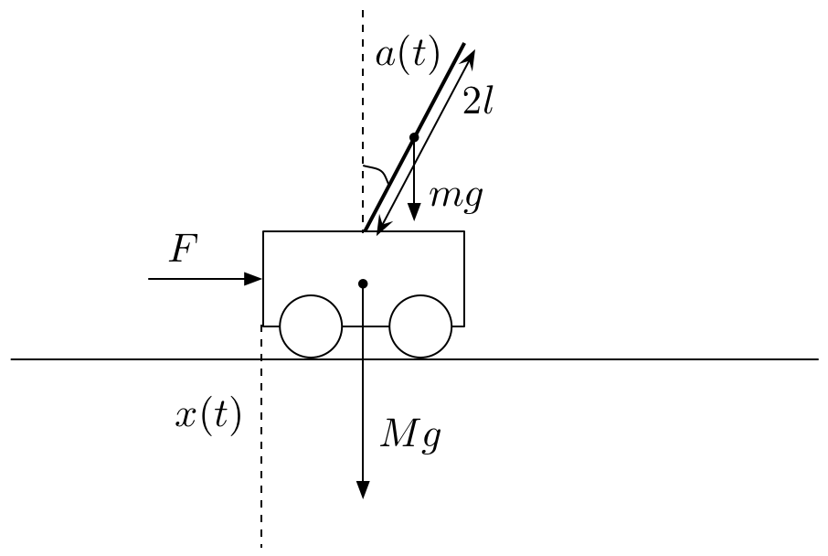

学校の掃除の時間にホウキを逆さまにして指に乗せて遊んだことありませんか？指を動かしてどのくらい長い時間バランスを取れるかを競う遊びです．今回はこの遊びをコンピュータにやってもらいましょう．果たしてコンピュータはどのくらい長くバランスを取っていられるでしょうか？
ホウキの遊びは倒立振子（とうりつしんし）と呼ばれる物理学の典型的なモデルです．ここでは倒立振子のシミュレーションを行うのに必要な運動方程式を紹介します．
ホウキを棒，指を台車に変えて，図のような倒立振子の運動方程式を求めます．各物理量は次のようにします．
これらを用いて運動方程式を作ると次のようになります．
これを $\ddot{x}(t)$ と $\ddot{a}(t)$ について解くと次の解が得られます．
台車の質量，棒の質量と長さ，重力加速度，台車を押す力に実際に数値を設定することで，コンピュータ上でシミュレーションすることができます．カーソルキーの左右で台車の右側／左側から力を加えます．
コンピュータは倒立振子の制御をどのように行うのでしょうか？「制御」と聞くと難しいことを連想するかもしれませんが，実は原理は非常に単純です．皆さんがホウキでバランスを取るときのことを想像してください．バランスを取るときには恐らく，目で見たり指にかかる重さを感じることでホウキの状態（角度，速度，加速度）を計測して，それに合わせて指をどう動かしたら良いかを決定しているはずです．
コンピュータを使った自動制御もこの原理で行うことができます．つまり棒や台車の状態を計測して，右から押すのか左から押すのかという行動を決定します．この行動の決定がうまくいけば長時間にわたって棒のバランスを保つことができます．
さて問題は「行動をどうやって決めるか？」です．このうまくバランスを保つ行動を決める方法は大きく分けて二通りあります．ひとつは，先ほど求めた運動方程式から理論上最適な行動を導き出す方法です．これは，今考えている問題に対して理想的な制御方法が得られるため，半永久的に棒のバランスを保つことができますが，難しい数学を使う必要があったり色々大変だったりします．
もっと手軽に良い制御方法を導く方法として，今回はコンピュータ上での「学習」に注目します．学習と聞くとこれまた「難しそう・・・」と思うかもしれませんが，少し前にお話ししたように原理はとても単純なものです．学習による制御では，私たちは予（あらかじ）めコンピュータにどうやって行動したら良いか指示しません．その代わり，棒が倒れなかったら褒めてあげ，棒を倒したら叱ってやります．最初，コンピュータは人間でいう赤ちゃんの状態で，どうやって台車を動かして良いかわからないので，フラフラします．しかし，何度も棒を倒して叱られることで，叱られることを回避する行動，つまり棒のバランスを取るような行動をするようになります．このように，ある環境内で，現在の状態を観測し，取るべき行動の決定を学習することを強化学習といいます．
強化学習は具体的にいくつかの学習アルゴリズムを持ちますが，この倒立振子では Q 学習と呼ばれる学習アルゴリズムを使っています．Q 学習は数学的にはマルコフ決定過程と呼ばれる確率過程に基づいたアルゴリズムです．
今回は非常に単純なアルゴリズムを持つ強化学習で倒立振子を制御することを目指しました．「叱る・褒める」という単純な学習ですが，これを繰り返すことで制御方法を学習できることがわかります．人間の脳も強化学習によって学習しているという学説もあり，ロボットやウェブなど多くの分野での応用が期待されています．最近では，深層学習（Deep Learning）と組み合わさって，画像の情報だけから様々なことを学習することができるようになっています．Q 学習や深層学習の応用に興味がある人は「こちら（Google検索）」から詳しい情報を探してみてください．